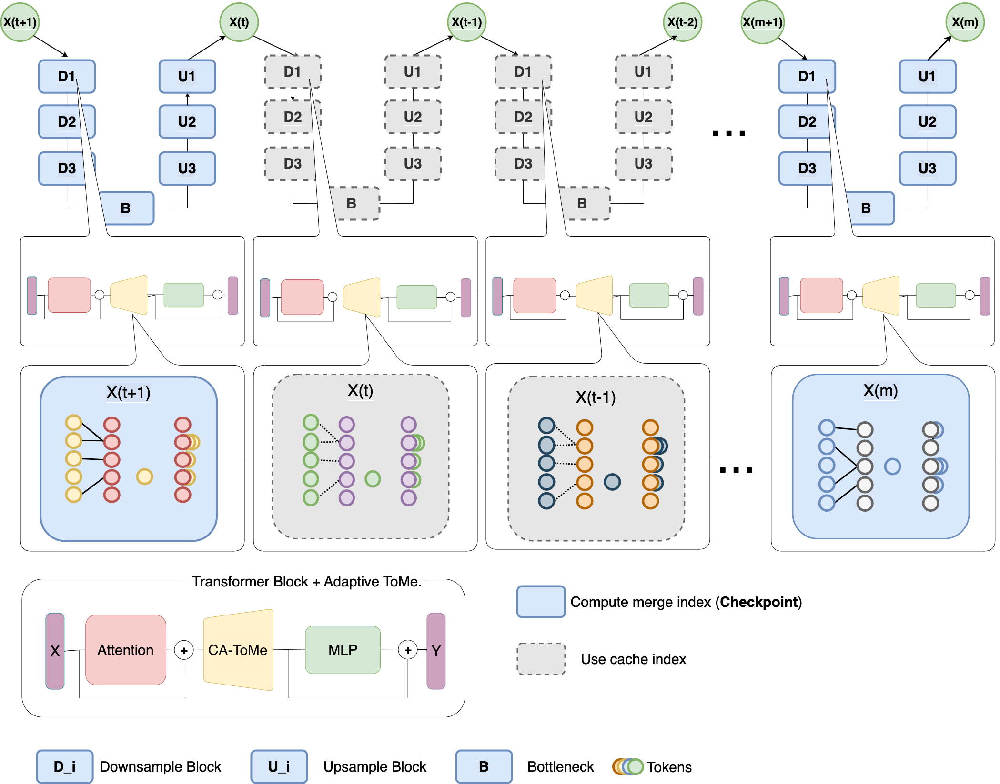
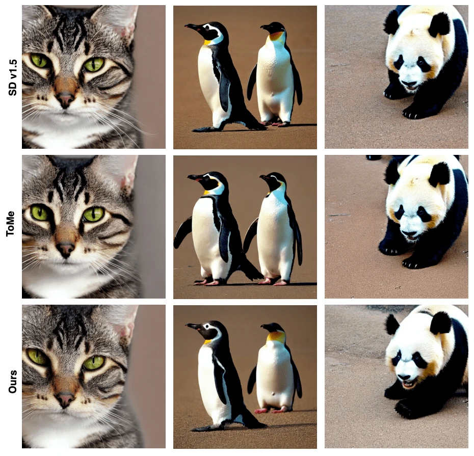

Mini-Torch
I created Mini-Torch, a small deep learning library in Python and NumPy. I extended Andrej Karpathy’s micrograd to compute gradients through multidimensional tensor operations such as matrix multiplication. I also built a PyTorch-style module system that automatically collects trainable parameters from nested layers.
I included examples of training a small neural network and comparing Mini-Torch’s gradients with PyTorch’s for a batched linear operation.
Cached Adaptive Token Merging (CA-ToMe)
I implemented CA-ToMe in Stable Diffusion’s transformer blocks. I developed the method with my coauthors to speed up image generation without retraining the model. It merges similar image tokens and reuses the matches across denoising steps to avoid repeated computation.
View CA-ToMe on GitHub · Read the paper on arXiv


